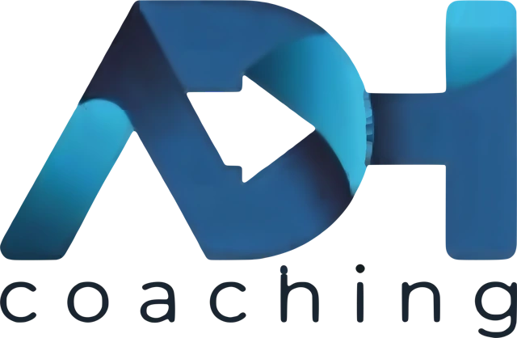
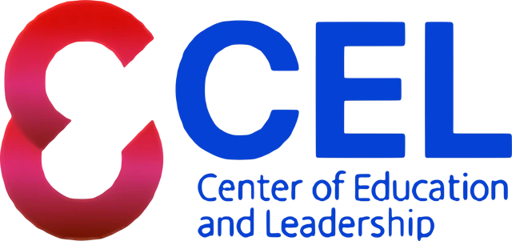

Dos programas. Pieza por pieza.
El Técnico Laboral en Marketing Digital e Inteligencia Artificial, nuestro programa insignia, y el Técnico Laboral en Coaching Ontológico, en alianza académica con ADH Coaching.
Elige tu programa.
Todo lo que necesitas, en un solo recorrido.
Es el programa insignia de Semply, registrado ante la Secretaría de Educación de Yumbo. Reúne todos los saberes del marketing digital y la inteligencia artificial, y de él nacen los cursos y rutas más cortas que vienen.
Al terminar recibes el Certificado de Aptitud Ocupacional de Técnico Laboral por Competencias en Marketing Digital e Inteligencia Artificial.
Este es un programa de Educación para el Trabajo y el Desarrollo Humano (Ley 1064 de 2006 y Decreto 1075 de 2015). Al terminarlo se otorga un Certificado de Aptitud Ocupacional de Técnico Laboral por Competencias. No es un programa de educación superior ni conduce a título profesional, tecnológico o técnico profesional. No garantizamos empleo ni ingresos.
¿En qué puedes trabajar al terminar?
- Programa
- Técnico Laboral en Marketing Digital e Inteligencia Artificial
- Duración
- 1.200 horas · 2 semestres · 12 módulos de 100 horas
- Metodología
- 100 % virtual: clases grabadas, sesiones en vivo y práctica guiada en la plataforma
- Certificado
- Certificado de Aptitud Ocupacional de Técnico Laboral por Competencias en Marketing Digital e Inteligencia Artificial. No conduce a título profesional.
- Registro
- Resolución 1200.3.2-0496 del 27 de abril de 2026, Secretaría de Educación de Yumbo. Vigente hasta el 27 de abril de 2031.
- Licencia
- Resolución 0495 del 27 de abril de 2026, Secretaría de Educación de Yumbo, que ejerce la inspección y vigilancia de la institución.
Doce módulos, dos semestres.
Cada módulo tiene su temario completo en el plan de estudios: para quién es, qué necesitas, las 10 unidades y lo que entregas en cada una.
No son 100 horas de video. Son 100 horas de trabajo.
Así está armado cada módulo, unidad por unidad. Elige uno aquí o abre el plan de estudios completo.
Arma tu plan. Mira cuánto es.
Elige cómo pagar, toca los módulos que quieres y marca tus descuentos. El valor se calcula solo.
Aprende a acompañar el cambio.
Fórmate como Coach Ontológico Profesional: aprende a observar cómo el lenguaje, las emociones y el cuerpo crean resultados, y a acompañar procesos de cambio en personas, equipos y organizaciones.
Lo dictamos en alianza académica con ADH Coaching, Academia de Desarrollo Humano y Coaching Ontológico, con su equipo de entrenadores.
El lenguaje no solo describe la realidad: también la crea.
Reinterpretar y co-construir nuevas realidades con tus clientes.
Ver patrones y relaciones para intervenir teniendo en cuenta el todo.


10Unidades del programa
- Introductorio: historia y raíces del coaching
- Ontología del lenguaje
- Introducción al coaching ontológico
- Coaching ontológico: indagación y metodología de sesión
- Ética y coaching ontológico
- Prácticas y proceso de coaching
- Herramientas nuevas: inteligencia artificial y primeros auxilios psicológicos
- Neurociencia
- Health coaching
- Coaching organizacional
Cursos y rutas que nacen del programa.
Cursos cortos y rutas por tema, para quien quiere empezar por una pieza. Estamos armando la lista.
Cursos cortos
Temas puntuales para resolver algo esta semana.
Rutas por tema
Varios módulos agrupados: contenido, pauta, IA o posicionamiento.
Formación para empresas
Planes para equipos de mercadeo y ventas.
Empieza el primer semestre.
Déjanos tus datos y admisiones te contacta. Los primeros 30 inscritos tienen 50 % de descuento hasta el 15 de diciembre.